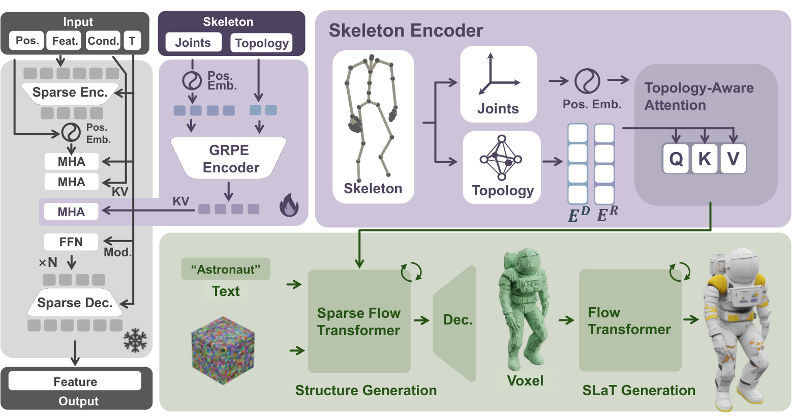

Native 3D generative models have achieved remarkable fidelity and speed, yet they suffer from a critical limitation: inability to prescribe precise structural articulations, where precise structural control within the native 3D space remains underexplored. This paper proposes SK-Adapter, a simple and yet highly efficient and effective framework that unlocks precise skeletal manipulation for native 3D generation. Moving beyond text or image prompts, which can be ambiguous for precise structure, we treat the 3D skeleton as a first-class control signal. SK-Adapter is a lightweight structural adapter network that encodes joint coordinates and topology into learnable tokens, which are injected into the frozen 3D generation backbone via cross-attention. This smart design allows the model to not only effectively “attend” to specific 3D structural constraints but also preserve its original generative priors. To bridge the data gap, we contribute Objaverse-TMS dataset, a large-scale dataset of 24k text-mesh-skeleton pairs. Extensive experiments confirm that our method achieves robust structural control while preserving the geometry and texture quality of the foundation model, significantly outperforming existing baselines. Furthermore, we extend this capability to local 3D editing, enabling the region specific editing of existing assets with skeletal guidance, which is unattainable by previous methods.

SK-Adapter is a 3D skeleton-guided generation framework for precise structural control. Unlike heavy multi-stage pipelines that rely on ambiguous 2D projections, SK-Adapter utilizes Trellis as backbone and injects joint-based positional tokens into sparse structure transformer blocks. This simple yet effective approach ensures spatial accuracy and high data efficiency, enabling the generation of diverse, precisely-controlled 3D assets in seconds.
@inproceedings{wang2026skadapter,
title = {SK-Adapter: Skeleton-Based Structural Control for Native 3D Generation},
author = {Wang, Anbang and Ao, Yuzhuo and Wu, Shangzhe and Tang, Chi-Keung},
journal = {arXiv preprint},
year = {2026},
}